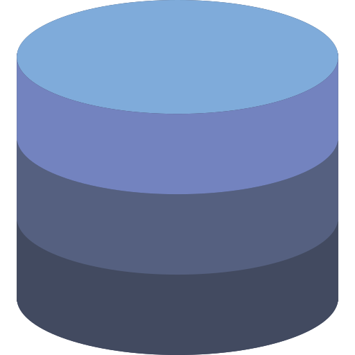

Kotlin
Au cours de ma deuxième année, nous avons appris le langage Kotlin. Dans ce langage, nous avons appris à réaliser une application mobile complète. Nous avons appris à faire un visuel, à créer une logique métier ainsi que de communiquer avec une API. Je suis donc grâce à ça capable de réaliser des applications mobiles complètes de A à Z.

Langage C
Au début de ma première année de BUT, nous avons appris pour nous introduire à l'algorithmie. Nous avons avons appris à manipuler de manière statique ou dynamique des listes, d'appeler de manière récursive des fonctions ainsi que gérer des fichiers. Je suis capable avec cette compétence de gérer des données, trier de manière efficace celles-ci et créer des algorithmes simples.

Développement web
Pendant ma première année, nous avons déécouvert le C# au travers d'un jeu à réaliser en .NET MAUI. En seconde année, nous avons utilisé de nouveaux frameworks du c#: Entity Framework, qui nous a permis de gérer nos données dans notre application, Blazor, afin de réaliser un panel administrateur ainsi que ASP.NET Core pour réaliser notre Web API. Ainsi, je suis capable d'utiliser c# ainsi que beaucoup de ses frameworks pour réaliser des algorithmes, des applications MAUI, faire du Blazor ou encore manipuler des données grâce à Entity Framework.

Base de donnée
En première année de BUT informatique ainsi qu'en NSI, j'ai appris les bases de données. On nous a montré comment réaliser une base de données, en modèle logique de données ainsi qu'en modèle relationnel de données. Nous avons ensuite appris à les manipuler à travers des requêtes. Nous avons ensuite vu comment administrer une base de donnée, comment utiliser des vues et comment utiliser le langage pspgsql. Nous avons aussi appris à les manipuler dans nos algorithmes via python pour mieux comprendre et analyser ces données et en réalisant des graphiques par exemple. Je suis grâce à cela capable de réaliser des bases de données conforme aux besoins, manipuler ces bases de donner pour tirer les informations voulues et analyser ces données pour en tirer des conslusions.

Développement web
Pendant ma première année, nous avons appris à structurer des pages avec le langage html, lui donner un style avec le css et récolter des données grâce au php. Pendant ma seconde année, nous avons réalisé en PHP un site web complet permettant la gestion d'un club d'anglais. Nous avons vu en PHP toute la logique métier, le patron MVC, comment afficher des données ainsi que comment les envoyer et les récupérer au travers d'une API. Je suis actuellement capable grâce à ces apprentissages de réaliser des sites web en affichant les données, en les designant et en manipulant les données.
Intégration à l'équipe
Je suis capable de m'intégrer efficacement à une équipe. Grâce à cette qualité, je suis plus apte à réaliser des travaux de groupe. Cette compétence est très importante car dans l'informatique se font en groupe et les équipes peuvent changer souvent. Grâce à celle-ci, peu importe l'équipe, je serais capable de faie de mon mieux pour assurer la réussite du projet et venir en aide à mes camarades.
Patience
Je suis quelqu'un de patient. Grâce à cette qualité, je suis plus facilement apte à travailler en équipe car je sais garder mon calme et éviter les conflits. De plus, je vais aussi être capable d’expliquer mon travail à quelqu’un autant de fois et de manière différentes que possible pour qu’il comprenne. Cette qualité est aussi importante en informatique car il faut de la patience pour relire son programme autant de fois que nécessaire s’il ne marche pas.
Esprit d'analyse
Je possède un esprit d'analyse. Grâce à cette qualité je suis capable d'analyser le code efficacement et de réaliser un code répondant rapidement à l'objectif et bien structuré.